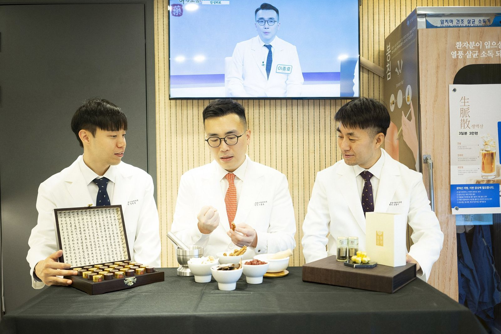

한 줄 답변
매운 음식 뒤 속쓰림과 배 아픔은 양과 빈도, 공복 여부, 함께 먹은 음식에 따라 달라 식사 패턴을 함께 살피고, 피가 섞인 변이나 심한 복통이면 먼저 병원 진료를 권합니다.
매운 음식 뒤 속쓰림과 배 아픔은 양과 빈도, 공복 여부, 함께 먹은 음식에 따라 달라 식사 패턴을 함께 살피고, 피가 섞인 변이나 심한 복통이면 먼저 병원 진료를 권합니다.
여쭙는 것
- 매운 음식을 일주일에 얼마나 드시나요?
- 먹은 직후에 불편한지, 몇 시간 뒤에 불편한지 어떤가요?
- 공복에 드시는지, 술이나 커피와 함께 드시는지 어떤가요?
생활에서 해 볼 것
- 공복에 매운 음식을 먹는 것을 피하고 밥과 함께 먹기
- 먹는 양과 횟수를 조금씩 줄여 반응이 어떻게 달라지는지 기록하기
- 늦은 밤에 먹지 않고 식후 바로 눕지 않기
한의원에서 함께 살필 것
- 매운 음식을 먹고 속이 쓰리거나 아픈 경우 위장의 기능과 식사 습관을 살핍니다.
- 식후 속이 화끈거리는 경우 소화 리듬과 식사 간격을 함께 살핍니다.
- 스트레스가 많을 때 속이 예민한 경우 긴장과 수면을 함께 살핍니다.
먼저 확인이 필요한 신호
- 검은 변이나 피가 섞인 변이 있는 경우
- 속쓰림이 몇 주 이상 계속되거나 점점 심해지는 경우
- 삼킬 때 아프거나 체중이 이유 없이 줄어드는 경우
매운 음식을 먹은 뒤 속이 쓰리거나 화장실을 자주 찾게 되는 일은 흔합니다. 같은 음식에도 사람마다 반응이 다르고, 그날의 공복 여부와 컨디션에 따라서도 달라집니다.
먼저 이렇게 여쭙니다
- 매운 음식을 일주일에 얼마나 드시나요?
- 먹은 직후에 불편한지, 몇 시간 뒤에 불편한지 어떤가요?
- 공복에 드시는지, 술이나 커피와 함께 드시는지 어떤가요?
- 속쓰림 외에 설사나 복통이 함께 있나요?

일상에서 먼저 해 볼 수 있는 것
- 공복에 매운 음식을 먹는 것을 피하고 밥과 함께 먹기
- 먹는 양과 횟수를 조금씩 줄여 반응이 어떻게 달라지는지 기록하기
- 늦은 밤에 먹지 않고 식후 바로 눕지 않기
- 불편한 날에는 맑고 따뜻한 음식으로 속을 쉬게 하기
한의원에서 함께 살필 수 있는 경우
- 매운 음식을 먹고 속이 쓰리거나 아픈 경우 위장의 기능과 식사 습관을 살핍니다.
- 식후 속이 화끈거리는 경우 소화 리듬과 식사 간격을 함께 살핍니다.
- 스트레스가 많을 때 속이 예민한 경우 긴장과 수면을 함께 살핍니다.
진료실에서 이야기를 들은 뒤 어떤 방법이 맞을지 함께 정합니다.
이런 증상은 먼저 확인이 필요합니다
- 검은 변이나 피가 섞인 변이 있는 경우
- 속쓰림이 몇 주 이상 계속되거나 점점 심해지는 경우
- 삼킬 때 아프거나 체중이 이유 없이 줄어드는 경우
- 밤에 통증으로 잠에서 깨는 경우
복용 중인 약은 임의로 중단하지 말고 처방한 의사와 상의하세요.
자주 묻는 질문
매운 음식을 아예 끊어야 하나요?
반응은 사람마다 다르므로 양과 빈도, 먹는 방식을 조절하며 몸의 반응을 기록해 보는 편이 좋습니다.
한의원에서는 무엇을 살피나요?
식습관, 소화 상태, 대변의 모양, 수면과 스트레스를 함께 묻고 전반적인 상태를 살핍니다.
속쓰림이 자주 반복되면 어떻게 하나요?
증상 기록과 함께 의료기관에서 필요한 확인을 받으시기를 권합니다.
이 글은 일반적인 건강 정보이며 개인의 진단이나 치료를 대신하지 않습니다. 증상이 있거나 복용 중인 약이 있다면 진료를 통해 확인하세요. 치료 효과는 개인마다 다를 수 있습니다.
지난 이야기부터 이어서 묻습니다
좋은꿈참사랑한의원 노량진점은 재진 때 지난번 이야기부터 이어서 여쭙니다. 진료시간과 예약은 오시는 길에서 확인하세요.
좋은꿈참사랑한의원 노량진점은 재진 때 지난번 이야기부터 이어서 여쭙니다. 진료시간과 예약은 오시는 길에서 확인하세요.